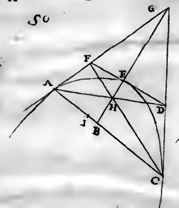

Propositio X · Theorema IX¶


PROP. X. THEOR. IX. (tab. 6. fig. 50, p. 47; in marg. 41. tertij conic.)
Si tres rectæ parabolam contingant in punctis :g:`F`, :g:`E`, :g:`D`, seque mutuo secent in :g:`A`, :g:`B`, :g:`C`; erit :g:`AB` ad :g:`BC` in duplicata ratione ipsius :g:`FE` ad :g:`ED`.